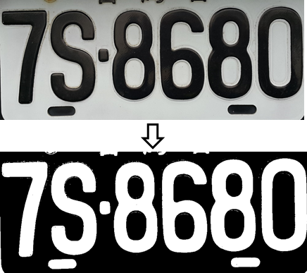

Brief Description: Otsu thresholding is a global image thresholding method used in image processing to automatically separate an image into two classes. Pixels above the threshold are considered one class (1-class), and pixels below are the other class (0-class). The key idea is to compute a threshold that maximizes the between-class variance or equivalently minimizes the within-class variance of pixel intensities.
